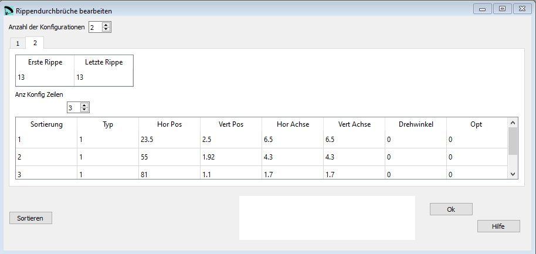

Rippendurchbrüche¶
Im Fenster Rippendurchbrüche editieren wir die Parameter aus dem 4. Abschnitt der lep Datei.
{kind=link}
Rohdaten:
*************************************************************
* 4. AIRFOIL HOLES *
*************************************************************
2
1
12
9
1 14.59 2.79 2.735 6.72 0. 0. 0. 0.
1 22.18 2.61 2.375 6.72 0. 0. 0. 0.
1 33.36 1.64 2.5 5.9 0. 0. 0. 0.
1 40.32 1.46 2.4 5.8 0. 0. 0. 0.
1 47.41 1.34 2.23 5.7 0. 0. 0. 0.
1 59.17 1.27 1.84 3.4 0. 0. 0. 0.
1 65.23 1.33 1.7 3.2 0. 0. 0. 0.
1 71.21 1.18 1.6 3.0 0. 0. 0. 0.
1 81.87 0.89 1.6 1.6 0. 0. 0. 0.
13
13
3
1 23.5 2.5 6.5 6.5 0. 0. 0. 0.
1 55.0 1.92 4.3 4.3 0. 0. 0. 0.
1 81. 1.1 1.7 1.7 0. 0. 0. 0.
Anzahl der Konfigurationen¶
In einer Konfiguration werden die Werte für eine Gruppe von Rippen zusammengefasst. Für alle Rippen innerhalb derselben Gruppe gelten dieselben Werte.
Erste Rippe¶
Die Nummer der ersten Rippe für die die Konfiguration gilt.
Letzte Rippe¶
Die Nummer der letzten Rippe für die die Konfiguration gilt.
Anzahl Konfig Zeilen¶
Innerhalb einer Konfiguration können mehrere Öffnungen definiert werden. Pro Öffnung wird eine Zeile definiert.
Sortierung¶
Eine Nummerierung der Zeilen welche von Lepg für die Sortierung verwendet wird.
Typ¶
Typ (Form) der Öffnung.
“1” Ellipse oder Kreis
“2” Ellipse oder Kreis mit Steg in der Mitte
“3” Dreieck


Hor Pos¶
Die horizontale Position der Öffnung von der Eintrittskante in [% Flügeltiefe].
Vert Pos¶
Die vertikale Position der Öffnung von der Profilsehne in [% Flügeltiefe].
Hor Achse¶
Die Länge der horizontalen Achse der Öffnung in [% Flügeltiefe], eigentlich die Breite der Öffnung.
Vert Achse¶
Die Länge der vertikalen Achse der Öffnung in [% Flügeltiefe], eigentlich die Höhe der Öffnung.
Drehwinkel¶
Der Drehwinkel der Öffnung in [Grad].
Opt¶
Für Typ “1” keine Bedeutung, sethe diesen Wert auf 0
Für Typ “2” die Breite des Steges in [cm]
Für Typ “3” der Eckenradius in [cm]
Sortieren¶
Mit der Schaltfläche Sortieren können die Zeilen neu angeordnet werden. Wenn das gemacht werden soll kannst Du die neuen Nummern in der ersten Spalte einsetzten und anschliessend mit der Schaltfläche die Tabelle neu sortieren.
Eine detaillierte Beschreibung in englisch findest Du auf der Laboratori d'envol website.